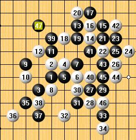
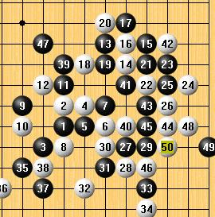
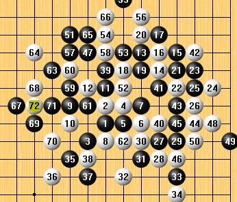

[棋局点评]混战中的一局棋
#1 [棋局点评]混战中的一局棋 作者：妙玉偷星 发表时间：2008-10-22 17:20:34
这是我的一个对局，刚刚我问真心老师这个局面，真心老师给我的回答是，这种局面就是在积累优势，同时黑白可战的局面，就是在等谁会犯错，下面我给大家分析这局棋，下这一局棋的前一天我在上海棋手活动的地方，在那里看他们下棋明白了一点东西，何为先手就是有优势无论优势多大都是先手，黑白可战的局，就是对先手的把握。27手的时候我防下面同时可以拓跋展下面的空间，同时也可以形成一个隐的死二。白防了27的下面走到33都是正常的走法，35手我拓了一个死三，此时白防了我的死三，我又在37走在G5 白36走在G6，现在大家还没有感觉到这个G5的好处，别急，39我走在H11，白走40走在K8到46手都是正常的走法47我走在了G12就是在睹白此时是否会在此出现错误，果然白上当，这就是黑白可战局中积累优势，同时在等待对手出现错误，下面我把黑杀的棋也付上。这种战局就是对子力把握，其实这一局不算精彩的对局，但是其中有好多五子棋当中最基本的东西，大家可以仔细的品味一下，从中会得到一些东西，最后一点，我觉得下棋就是在悟，在对五子一些基本东西的掌握，希望大家能把下棋的一些心得和大家分想一下，是自己下棋的心得，



［ 茗弈小刀 于 2008-10-22 20:45:07 时奖励此帖[金币加 20 威望加1］
［此帖子已被 茗弈小刀 在 2009-4-22 20:23:48 编辑过］
#2 Re:混战中的一局棋 作者：茗弈小刀 发表时间：2008-10-22 20:57:29
看来星儿在道场学到很多东西呢，对棋的控制和理解也增强了不少，43手39跳上一子可杀了。星儿继续努力！师傅为你自豪！#3 Re:混战中的一局棋 作者：雅典娜 发表时间：2008-10-23 8:30:01
师傅:43手39跳上一子怎么杀啊?请指点一下!#4 Re:混战中的一局棋 作者：茗弈小刀 发表时间：2008-10-23 12:04:04
即43=54你说白防哪？
#5 Re:混战中的一局棋 作者：雅典娜 发表时间：2008-10-24 8:14:01
偶卡中间,就是53位#6 Re:混战中的一局棋 作者：茗弈小刀 发表时间：2008-10-24 10:43:19
汗 由于9和11交换了没看清楚，抱歉，杀不了。。。。